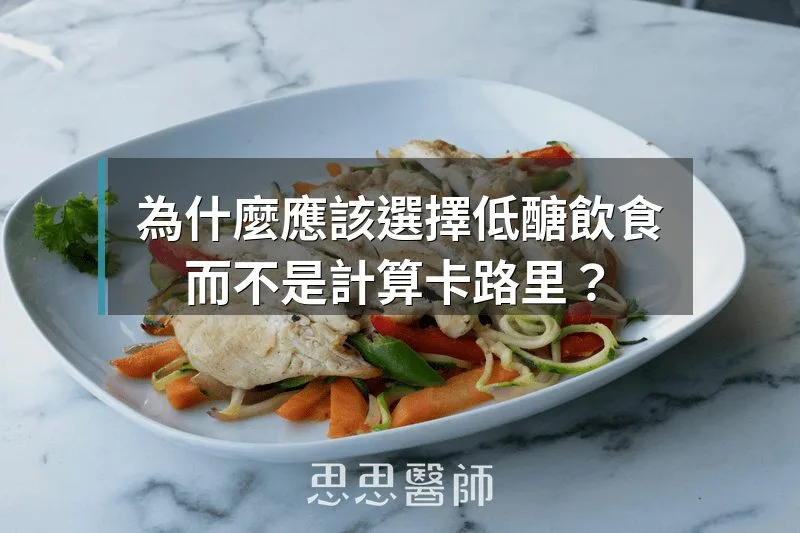

為什麼應該選擇低醣飲食，而不是計算卡路里？

為什麼應該選擇低醣飲食，而不是計算卡路里？
我在門診收到最多的問題之一，大概就是：「低醣飲食到底哪裡不一樣？不就是少吃了嗎？」
問得好。表面上，低醣飲食確實會讓人吃進的總熱量減少，體重也往往跟著下降。但如果你以為少吃就等於低醣、效果是一樣的，那你只對了一半，而那另一半，可能正是你花了很多力氣、血糖還是卡在那裡的原因。
第 2 型糖尿病，根本上是一種慢性發炎疾病（Chronic Inflammatory Disease）。 高血糖是症狀，是這場發炎在身體裡留下的足跡，但慢性低度發炎（Chronic Low-Grade Inflammation, CLGI） 才是在背後驅動它的引擎，而且它往往在血糖開始出問題之前，就已經悄悄在運轉了。計算熱量、吃少一點，能壓住一部分症狀，但沒有把這個引擎關掉。
2026 年發表於《Endocrine Research》的一篇研究，第一次把這件事的機制說清楚了。由 Virta Health 的 Athinarayanan、Phinney、Volek 等人主導，追蹤了 195 位第 2 型糖尿病患者，讓他們接受低碳水化合物介入（每天碳水低於 30 克，目標是讓血液中的 β-羥基丁酸（BHB, β-hydroxybutyrate） 維持在生酮範圍），並以 63 位接受常規治療的患者做對照。他們量測了 21 項發炎與免疫指標（IIMs），涵蓋細胞激素、血管黏附分子、趨化因子，以及從血球計算衍生的全身免疫發炎指數（SII），追蹤整整兩年。
結果很清楚。低醣介入組在第一年讓 21 項裡的 19 項顯著改善，效果在第二年大致維持。常規治療組在相同的兩年期間，21 項，沒有一項出現顯著變化。
改善幅度最大的幾項，臨床意義很直接。hs-CRP（高敏感性 C 反應蛋白） 在一年內下降了 32.1%，從 7.56 降至 5.13 mg/L。P-Selectin 下降 29.6%、E-Selectin 下降 24.6%，這兩項反映的是血管內皮的發炎狀態，跟動脈硬化與微血管病變的進展直接相關。IL-6 下降 18.6%、TNF-α 下降 13.4%，這兩種細胞激素是胰島素訊號傳遞的主要干擾者，它們升高時，細胞對胰島素的回應就像收訊變差的手機，訊號在那裡，但打不進去。
比較有意思的是，研究者進一步把「減重帶來的改善」和「酮體本身帶來的改善」，統計上拆開來分析。這才是這篇研究真正的核心，也才是回答「低醣飲食和少吃有什麼不同」的答案所在。
結果發現，這 21 項發炎指標的改善，來自兩條截然不同的路徑。
第一條路是體重下降。 IL-6、IL-1β、IL-18、IL-8 這幾項細胞激素，主要跟著體重減輕而改善。這個機制任何能讓人成功減重的方法都可以觸發，包括單純的熱量控制。
第二條路是 BHB 的直接效果，跟有沒有減重完全無關。 ICAM-1（細胞間黏附分子-1）、P-Selectin、VEGF-A（血管內皮生長因子-A）、全身免疫發炎指數（SII）、白血球計數，這些指標的改善和體重變化在統計上沒有關聯，卻和血液裡的 BHB 濃度高低密切相關。不是你減掉多少公斤決定這些數字往哪走，而是你有沒有進入生酮。
這裡值得多解釋一下 BHB 在做什麼。BHB 不只是身體缺乏葡萄糖時的備用燃料，它本身是一個信號分子（Signaling Molecule），能直接壓制 NLRP3 炎症小體（NLRP3 Inflammasome） 的活化。NLRP3 是細胞內感應代謝壓力的發炎點火開關，在高血糖和胰島素阻抗的環境裡持續被激活，一旦點燃，就會釋放 IL-1β 和 IL-18，破壞胰島 β 細胞的功能，加深胰島素阻抗，讓病情越來越難解開。BHB 關掉這個開關的方式，是減少粒線體活性氧（Mitochondrial ROS）的產生，並阻斷讓 NLRP3 點火所需的鉀離子外流訊號（K⁺ Efflux）。這是一個生酮飲食特有的機制，低卡路里飲食觸發不到。
這也是為什麼，當研究者用 LASSO 統計回歸分析哪些發炎指標的改善最能預測血糖進步時，結果直接指向了發炎軸的核心：IL-6 是預測 HbA1c 改善最強的單一指標，其次是 IL-1β 和 IL-18。在預測胰島素阻抗（HOMA-IR）的改善方面，IL-18 是唯一被保留的獨立預測因子。血糖的改善，不是因為吃進的碳水少了所以血糖低了，而是因為發炎消退了，β 細胞功能改善了，胰島素受體的訊號傳遞恢復了，血糖才跟著往下走。在這批受試者中，HbA1c 從 7.5% 降至 6.2%，HOMA-IR 從 9.1 降至 4.9，超過五成患者達到糖尿病緩解。
當然，這篇研究有它的限制。它不是隨機對照試驗，而是非隨機設計的事後分析，兩組在部分基礎數值上有差異，研究者也因此不做組間比較，而是各自分析組內的縱向變化。這個限制要誠實面對。但兩年的追蹤時間、21 項橫跨先天免疫和適應性免疫系統的廣譜指標、常規治療組在兩年內零改善的對比，放在一起，說服力仍然很強。
如果你有第 2 型糖尿病，或正處於前糖尿病、代謝症候群的邊緣，少吃一點的方向當然是對的。但那只是這趟路的一半。發炎有兩個開關，體重下降能關掉其中一個，進入生酮才能關掉另一個，而哪些指標改善、改善多少，完全取決於你有沒有產生足夠的酮體，不是你減掉多少公斤。
目前大多數的飲食建議，讓病人只走了一半的路。
（本文由我規劃架構與觀點，並協同 AI 校正與潤飾語句）
 空腹小雞跟思思醫師一起斷食，順便養一隻小雞來養小雞 →
空腹小雞跟思思醫師一起斷食，順便養一隻小雞來養小雞 →
好朋友週信
每週五一封：《健康駭客週報》這集的研究重點，加上家醫專欄這週的新文章。免費，隨時可以退訂。
延伸閱讀

每週兩罐沙丁魚，逆轉你的代謝問題
2021 年隨機對照試驗中，糖尿病前期長者每週多吃兩罐沙丁魚，一年後 FINDRISC 極高風險比例由 37.3% 降到 7.7%，胰島素阻抗也下降。

飯後的血液指標，有時候比飯前更重要
飯後血液指標反映胰島素反應與代謝控制的實際狀況，往往比飯前數值更能說明真實身體狀態。

胰臟癌最被忽略的風險因子，不是遺傳也不是飲酒
長期高胰島素血症會刺激胰臟腺泡細胞過度生產消化酵素，引發反覆發炎，是胰臟癌癌前病變形成的關鍵驅動因素。